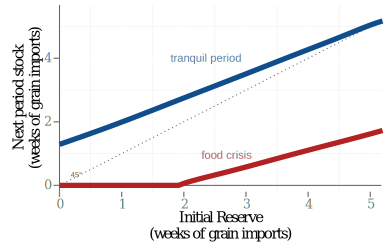

Essays on the World Food Crisis:
An Assessment of Policy Options
July 15, 2015
Table of Contents
The World Food Crisis
Despite rising production, food prices are higher and increasingly volatile
Undernourished people in the world
Revolts when food is expensive

Possible cause of the crisis
Affecting supply:
- rising oil prices;
- declining stocks and reserves;
- regional catastrophic weather;
- export restrictions;
- decline in productivity and R&D in agriculture.
Affecting demand:
- strong income growth in China and India;
- biofuel production in the USA and Europe;
- preventive imports surges;
- speculation in financial markets.
The essays:
- To what extend do food security policies cause price spikes?
- Food reserves to cope with the crisis?
- In a poor developing country?
- In a multilateral agreement?
Drivers of the World Grain Price Crisis in the Short- and Long-Run: A Spatial-Temporal Rational Expectations Equilibrium Approach
- Can food security policies worsen a food crisis?
- Three policies
- export restrictions
- public buffer stock
- ethanol production mandate
- long term price affected by ethanol mandate.
- short term crisis worsened by export restrictions
Food Security for Whom? The Effectiveness of Food Reserves in Poor Developing Countries
- Can a food reserve help a poor country to deal with volatile prices?
- A buffer stock relieves future hunger, but what about today's poor?
- For Haiti, a buffer stock offers little protection; income transfers may be more effective.

Sustainability of Regional Food Reserves When Default Is Possible
- Can countries benefit from pooling their reserves?
- Two reserve options
- credit union
- insurance union
- Risk sharing is more effective when production shocks are negatively correlated, but joint reserve is more stable if correlation is positive
Drivers of the World Grain Price Crisis in the Short- and Long-Run:
A Spatial-Temporal Rational Expectations Equilibrium Approach
Introduction
Build a model to examine some proposed drivers of the World Food Price Crisis:
- low grain stock levels;
- trade restrictions by wheat exporters;
- public storage by wheat importers; and
- diversion of corn production to biofuels.
Share of corn used in ethanol production
The Model
- Trade: arbitrage
- One fixed input: land
- Production: rational expectations
- Storage: rational expectations
Supply, demand, production, consumption
Supply and demand:
\( \newcommand{\DEF}[2]{\underset{\scriptsize\color{grey}{\text{#1}}}{#2}}\) \[ \DEF{production}{\tilde{Q}_i} + \DEF{past storage}{Z_{i,-1}} \equiv \DEF{availability}{A_i} = \DEF{consumption}{C_i} + \DEF{storage}{Z_i} + \DEF{net exports}{Y_i} \]Production
\[\DEF{production}{\tilde{Q}_i} = \DEF{acreage}{q_{i,-1}} \times \DEF{yield}{\tilde{\epsilon}_i}\]Consumption demand
\[\DEF{consumption}{C_i} = \alpha_i \DEF{price}{P_i}^{-\beta_i}\]Trade and private storage
Trade:
\begin{equation} 0 \leq \DEF{exports}{y_{jk}} \leq \DEF{capacity}{\bar{y}_{jk}} \qquad\perp\qquad \begin{cases} P_k - \DEF{shipping}{\tau_{jk}} - P_j & \text{unrestricted} \\ \\ \min [P_k - \tau_{jk},\DEF{ceiling}{\bar{P}_j}] - P_j & \text{restricted} \end{cases} \end{equation}Private storage
\begin{equation} 0 \leq Z_i \leq \DEF{capacity}{\bar{Z}_{i}} \qquad\perp\qquad \delta \; \DEF{expected}{E P'_i} - P_i - \DEF{cost}{K} \end{equation}Public storage
Public storage
\[ 0 \leq Z_{i} \leq \DEF{capacity}{\bar{Z}_{i}} \qquad\perp\qquad \DEF{strike price}{\bar{P}_i} - P_i \]
alternatively
\[ Z_i = \bar{Z}_i\;\frac{1+\exp\left[-s\bar{P}_i\right]}{1+\exp\left[-s(\bar{P}_i - P_i)\right]} \]
Acreage
Share of land cultivated with wheat
\[ \lambda_\min \leq \DEF{wheat share}{\lambda} \leq \lambda_\max \qquad\perp\qquad E P'_{\text{wheat}} - \phi E P'_{\text{corn}} \]
Acreage:
\begin{align} q_\text{corn} &= (1-\lambda)\DEF{land}{L} \\ \\ q_\text{wheat} &=\lambda \DEF{land}{L} \end{align}Dealing with the "curse of dimensionality"
- Collocation with Chebyshev polynomials, 9 nodes per dimension.
- $A$ has 6 dimensions $\Rightarrow$ $9^6= 531\,441$ nodes and basis functions if using tensor product.
- Use Smolyak's method to choose nodes and bases.
- Result: only 1409 nodes and 389 polynomials.
Data Sources and regions
Most parameters calibrated with historical data from PSD database (USDA)
| World | Exporters | Importers | |
| Corn |
|
|
|
| Wheat |
|
|
|
Numerical solution strategy
- Dynamic model, with state variable $A$
- Given $A_i$, model can be reduced to a mixed-complementarity problem with unknowns $P,\;Z,\;\lambda,\;y\;$ $\Rightarrow$ 17 or 18 variables.
- $E P'_i$ is unknown $\Rightarrow$ collocation methods: $p_i\approx \hat{p}_i = \sum_h{c_h \phi_h(A)}$
- Inner loop iteration to solve MCP, using $A$ and numerical integration to evaluate \begin{equation} E P'_i \approx E\sum_{h=1}^H{c_h \phi_h(A')} \approx \sum_j\omega_j\sum_h{c_h \phi_h(Z + q\epsilon'_j)} \end{equation}
- Outer loop iteration to solve for collocation coeffs $c_h$
Policy Scenarios
| Policy Scenarios | Policy Shocks |
|
|
Long-term prices
- Ethanol mandate:
- only policy with large effect on long-term price (both grains)
- greatly increases price volatility of both grains, in all regions
- Wheat Exporter price ceiling increases wheat price volatility in other regions
- Public storage in Wheat Importer, despite displacing private storage, reduces wheat price volatility in all regions
Long-term prices: mean and standard deviation
| CORN | WHEAT | |||||
|---|---|---|---|---|---|---|
| World | Exporter | Importer | World | Exporter | Importer | |
| MEAN | ||||||
| 0: Baseline | 100.00 | 100.00 | 108.91 | 100.00 | 100.05 | 112.22 |
| 1: Price ceiling | 101.68 | 101.68 | 110.50 | 102.45 | 93.80 | 114.66 |
| 2: Public storage | 101.63 | 101.63 | 110.41 | 98.28 | 98.34 | 110.51 |
| 3: Ceiling + storage | 103.22 | 103.22 | 111.87 | 99.17 | 94.69 | 111.43 |
| 4: High demand | 118.18 | 118.18 | 126.2 | 115.19 | 115.23 | 127.41 |
| STANDARD DEVIATION | ||||||
| 0: Baseline | 14.72 | 14.72 | 13.98 | 18.02 | 18.08 | 18.02 |
| 1: Price ceiling | 16.07 | 16.07 | 14.93 | 24.54 | 6.92 | 24.54 |
| 2: Public storage | 17.23 | 17.23 | 16.11 | 11.45 | 11.54 | 11.44 |
| 3: Ceiling + storage | 19.26 | 19.26 | 17.50 | 14.64 | 4.73 | 14.53 |
| 4: High demand | 21.31 | 21.31 | 16.88 | 18.09 | 18.13 | 18.09 |
Long-term World prices: conditional on initial stock
Probability of crisis: conditional on initial stock
Short-term prices
- By itself, introducing price ceiling or public storage have small impact in short-term prices
- Initial grain storage is a key determinant of likelihood of severe price spikes
- An export price ceiling can heighten a price surge originated in production shock & low stocks
Short-term adjustment
Food Security for Whom?
The Effectiveness of Food Reserves in Poor Developing Countries
Food reserve to cope with volatile prices?
If a poor grain-importing country decides to operate a grain reserve to stabilize prices...
- what is the ultimate target: welfare vs. hunger
- what is the optimal size of the food reserve?
- is it better to use a financial reserve to buy grain when needed?
- how is the country's hunger rate affected by its operations?
Key features of the model
- Nested utility: two goods, two food ingredients
- Constant demand elasticities
- Substitution between ingredients
- Intertemporal, two grain prices
- Heterogeneous households: log-logistic income distribution
- Government objective: to prevent extreme hunger
Government problem: objectives and tools
Government runs a grain stockpile to deal with price fluctuations.
- Objective \[ V_{p_g^*}\left(s\right) = \max_{\DEF{tariff}{\tau}} \left\{\tfrac{1}{1-\rho}\left[1-\Gamma(\tau, \DEF{intn'l price}{p_g^*})\right]^{1-\rho} + \delta E V_{{p_g^*}'}\left(s'\right) \right\} \]
- Stock accumulation \[ \DEF{stock}{s'} = (1-\DEF{cost}{\phi})\left[s +\tfrac{1}{p_g^*} \DEF{revenue}{\Upsilon}\left(\tau, p_g^*\right) \right] \geq 0 \]
- External shocks \[ \pi_{ij} = Pr\left({p_{g}^*}'= p_j\quad | \quad p_{g}^* = p_i\right)\]
Reward function $r(\tau,P)$, by objective
| Objective, $V$ | Reward function, $r(\tau,p_g^*)$ |
|---|---|
| Hunger, $\Gamma$ | $\frac{1}{1-\rho}\left[1-\Gamma(\tau,p_g^*)\right]^{1-\rho} $ |
| Welfare,$\int_y v_i$ | $\frac{1}{1-\rho}\int_y\left[v(\tau,p_g^*)\right]^{1-\rho}$ |
Hunger rate depends on price level, income per capita and income inequality
$\DEF{hunger rate}{\Gamma(P)} = \left[1+\left(\frac{c\DEF{price}{P^\alpha} (\DEF{Gini}{G}\pi)^\eta} {\zeta \DEF{income}{Y^\eta}\sin^\eta(G\pi)}\right)^{1/{G\eta}}\right]^{-1}$Food reserve in Haiti
“The construction of this strategic reserve reflects the desire of my Government to promote national agricultural production, stabilize the market price of commodities and combat food insecurity. Indeed, the fight against hunger and extreme poverty constitutes the main pillars of government action.” Prime Minister, Laurent Lamothe
Solving the model: The food crisis in Haiti
Food Crisis in Haiti:
- Dec2007-Mar2008: rice price doubles
- Early April 2008: violent protests in Port-au-Prince
- April 12: Prime Minister Jacques Adouard Alexis ousted
Calibration of parameters: Haiti
- $\Gamma_{2011}=44.5\%$
- Imports $\approx 70\%$ of cereals consumed
- $p_g^*$ increased 85% during crisis
Solving the model: Numerical methods
- Numerical solution:
- Collocation method (dpsolve solver in CompEcon)
- Chebyshev polynomials with 12 nodes for continuous state $s_t$
- One discrete variable, price, with values 1.0 and 1.85
- Once solved, run Monte Carlo simulations to assess performance of the policy
| Parameter | Description | Value |
|---|---|---|
| α | price elasticity food demand | 0.788 |
| η | income elasticity food demand | 0.814 |
| σ | elasticity of substitution | 0.500 |
| θ | share of grain in food budget | 0.333 |
| c | hunger threshold | 30.258 |
| ζ | food demand scale | 1.208 |
| Y | income per capita | 114.925 |
| G | Gini coefficient | 0.590 |
| pL | price of grain when low | 1.000 |
| pH | price of grain when high | 1.850 |
| pv | price of vegetable | 1.000 |
| γ | proportion of years in crisis | 0.200 |
| ψ | expected duration of food crisis | 3.000 |
| δ | government discount factor | 0.970 |
| ρ | government relative risk aversion | 2.500 |
| φ | marginal cost of storage | 0.025 |
| r | interest rate | 0.010 |
Main results
The optimal grain storage policy will...
- not fully stabilize food prices.
- not prevent extreme hunger, yet it would reduce its frequency.
- be very sensitive to key parameters (price process, storage costs)
- often be outperformed by policies that attack poverty directly.
- not offer a clear advantage over accumulating financial assets.
The effect of crisis, without policy
| Variable | tranquil | crisis | % change |
|---|---|---|---|
| Price of grain | 1.0 | 1.85 | 85.0 |
| Price of food | 1.0 | 1.25 | 25.5 |
| Food consumption | 50.8 | 42.5 | -16.4 |
| Grain consumption | 16.9 | 11.7 | -31.1 |
| Vegetable consumption | 33.9 | 31.8 | -6.3 |
| Hunger rate (%) | 44.5 | 53.8 | 20.8 |
Government's policy
Storage  |
Tariff |
Hunger |
Long-term distribution of grain reserve
In half of the crisis, the reserve would be empty!
Long-term distribution of hunger
The reserve would fail at preventing extreme hunger.
Cash vs. grain reserve?
In this scenario, a grain reserve outperforms a cash reserve, but difference is small.
Food storage vs. fighting poverty
Resources used for grain reserve might be better spent at promoting growth.

Price stabilization vs. safety net?
Income redistribution, targeting the poor, may have a better outcome.
Sustainability of Regional Food Reserves When Default Is Possible
The case for joint reserves
| The promises | The challenges |
|
|
The Model
- Two countries
- No trade
- One grain
- Countries share a fraction of their grain
- Objective: maximize lifetime utility of representative agent
- Dynamic game with limited commitment
- Nash-Markov sub-game perfect equilibria
A country in autarky
Availability
\[\DEF{production}{\tilde{q}_i} + (1-\phi)\DEF{past storage}{s_{i,-1}} \equiv \DEF{availability}{a_i} = \DEF{consumption}{c_i} + \DEF{storage}{s_i} \]Bellman equation
\[ V\left(a\right) = \max_{s\in [0,a]} \left\{u(a-s) + \delta E V\left(a'\right)\right\} \]subject to
\[a' = (1-\phi)s + \tilde{q}'\]A joint reserve
Redistributing availabilities: country $B$ transfers $l = \psi(a_B - a_A)$ units of grain to country $A$
| Insurance contract | Credit contract |
|
\[\hat{a}_A = (1-\psi)a_A + \psi a_B\]
\[\hat{a}_B = \psi a_A + (1-\psi)a_B\] |
\[\hat{a}_A = (1-\psi)a_A + \psi a_B - l_{-1}\]
\[\hat{a}_B = \psi a_A + (1-\psi)a_B + l_{-1}\] |
If any country defaults, they remain in autarky forever
| Default |
|
\[\hat{a}_A = a_A\]
\[\hat{a}_B = a_B\] |
A game of default
| Insurance / Credit game | Country B | ||
|---|---|---|---|
| Cooperate | Default | ||
| Country A | Cooperate | $W^A(a_A,a_B\color{red}{, l}),W^B(a_A,a_B\color{red}{, l}) $ | $V^A(a_A), V^B(a_B) - \DEF{stigma}{\sigma}$ |
| Default | $V^A(a_A) - \sigma, V^B(a_B)$ | $V^A(a_A) - \sigma, V^B(a_B) - \sigma$ | |
where
\[\DEF{value of cooperating}{W(a_A,a_B\color{red}{, l})} = \max_{s\in [0,\hat{a}]} \left\{u(\hat{a}-s) + \delta E \DEF{game payoff}{U\left(a'_A,a'_B\color{red}{, l}\right)}\right\}\]Solving the game
Numerical solution builds on CompEcon's gamesolve:
- to allow discrete states
- to allow discrete actions
Approximation algorithm
- Discretize the production shocks
- Compute the value of autarky $V$
- Guess $W^A$ and $W^B$, using Chebyshev polynomials
- Get the payoffs $U^A$ and $U^B$ by solving the discrete game
- Update $W^A$ and $W^B$
- Iterate steps 3 and 4 until convergence
Baseline parameters
| Parameter | Description | Player 1 | Player 2 |
|---|---|---|---|
| $\rho$ | relative risk aversion | 2.00 | 2.00 |
| φ | marginal cost of storage | 0.05 | 0.05 |
| δ | government discount factor | 0.95 | 0.95 |
| σ | stigma | 0.05 | 0.05 |
| α | beta distribution parameter | 1.25 | 1.25 |
| $\lambda$ | max. production shock | 0.30 | 0.30 |
| ψ | shared availability | 0.15 | |
| $\varrho$ | production correlation | 0.00 | |
Main results
Because bigger liabilities drive countries to default, reserve is more sustainable when
- production shocks are positively correlated
- the shared fraction of availabilities is smaller
- the reserve is operated as an insurance union rather than a credit union
Default regions

- Default occurs when the required transfer exceeds a critical value $l^*$
- In insurance contract, only the country with higher availability has incentive to default.
- In credit contract, a debtor also has incentive to default if own availabily is low.
Time to default
The reserve would last only a few years, regardless of contract.

Production correlation and time to default
The reserve would be more stable for negatively-correlated production shocks.
Default when sharing less grain
When sharing less grain, insurance contract is very stable.